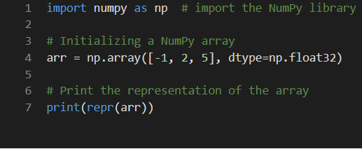

Many scenarios involve mostly numeric datasets. For example, medical data contains many numeric metrics, such as height, weight, and blood pressure. Furthermore, the majority of neural networks use input data that is either numeric or has been converted to a numeric form.
.
When we deal with numeric data, the best Python library to use is NumPy. The NumPy library allows us to perform many operations on numeric data, and convert the data to more usable forms.
